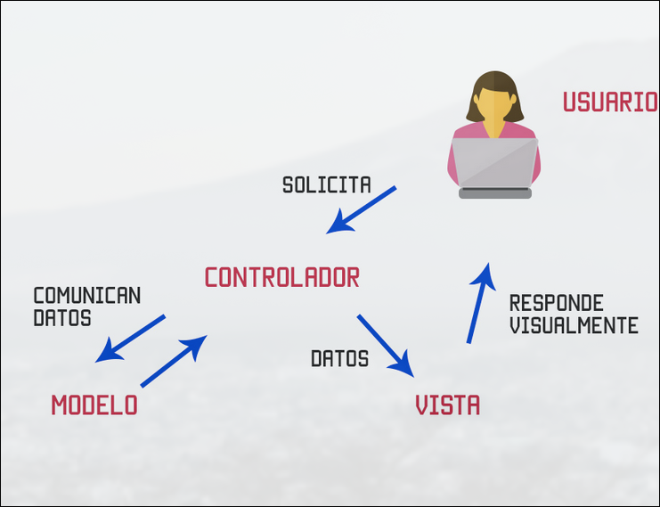
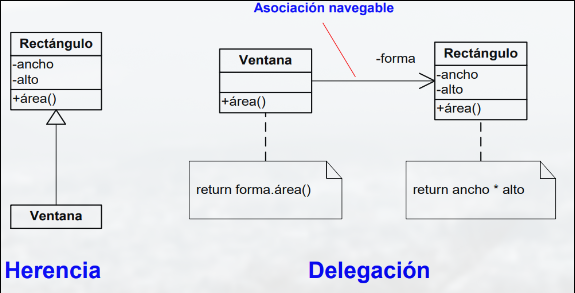

DESOFT · curso 2
7. Patrones de Diseño · DESOFT
7.1 Patrones de Diseño
Los patrones de diseño son soluciones reutilizables, probadas y eficientes a problemas de diseño que se repiten con frecuencia en el desarrollo de software.
Reutilización
- Un diseño debe adecuarse a requisitos actuales y anticipar problemas futuros.
- Los expertos no afrontan cada situación partiendo de cero, si no que reutilizan soluciones útiles en el pasado.
- Los patrones resuelven problemas concretos de diseño y ayudan a lograr soluciones flexibles y reutilizables.
Ventajas
- Cada patrón nombre, explica y evalua un diseño recurrente en sistemas.
- Periten lograr rápidamente un bien diseño reutilizando experiencia previa.
- Ayudan a elegir alternativas que hacen que un sistema sea reutilizable y a evitar las que provocan el efecto contrario.
- Facilitan la documentación y el mantenimiento de sistema existentes.
Elementos
| Elemento | Descripción |
|---|---|
| Nombre | Descripción concisa del problema de diseño |
| Problema | Contexto + situación en la que usar el patrón. |
| Solución | Estructura de clases y objetos que resuelve el problema. |
| Consecuencias | Ventajas, desventajas, y efectos secundarios. |
7.2 MVC (Model-View-Controller)
MVC es un patrón de diseño arquitectónico muy usado en interfaces gráficas y aplicaciones web.
| Componente | Rol |
|---|---|
| Modelo | Contiene los datos y lógica de negocio. |
| Vista | Muestra los datos del modelo al usuario. |
| Controlador | Gestiona la entrada del usuario y actualiza el modelo o la vista. |
 |
Ventajas:
- Vista y modelo desacoplados: puedes cambiar el aspecto visual sin tocar la lógica.
- Puedes anidar vistas o tener múltiples representaciones del mismo modelo.
- La interacción puede modificarse sin tocar la visualización.
7.3 Tipos de Patrones
| De creación | Estrucutales | De comportamiento | |
|---|---|---|---|
| Clase | Factory Method | Adapter | Interpreter Template Method |
| Objeto | Abstract Factory Builder Prototype Singleton |
Adapter Bridge Composite Decorator Facade Flyweight Proxy |
Chain of Responsibility Command Iterator Mediator Memento Observer State Strategy Visitor |
7.4 ¿Qué problemas resuelven?
Los patrones de diseño ayudan a la:
- Identificación de los objetos necesarios.
- Determinación del tamaño de los objetos.
- Diseñar interfaces limpias y coherentes.
- Reutilización.
- Diseñar pensando en la evolución del sistema.
Identificación de los objetos necesarios
Muchos elementos de un diseño proceden del análisis. Después aparecen clases sin equivalente en el mundo real. Los patrones ayudan a identificar las abstracciones menos obvias.
Determinación del tamaño de los objetos
Los objetos pueden varias en tamaño y en número. ALgunos patrones de diseño describen formas concretas de descomponer un objeto en otras más pequeños.
Diseñar interfaces limpias y coherentes
Se debe restringir el uso de referencias a clases concretas, los objetos deben mantener un conocimiento mutuo limitado. Los patrones de creación aseguran que el sistema se diseñe en términos de interfaces.
Reutilización
- Herencia: se define en tiempo de compilación, rompe el principio de encapsulación. (Flecha con triangulo blanco)
- Composición: los enlaces entre objetos se establecen en tiempo de ejecución. Cualquier otro objeto puede ser reemplazado dinámicamente por otro del mismo tipo. El acceso a objetos a través de interfaces no rompe la encapsulación.
- Principio de DOO: equilibra el uso de la asociación y la generalización como mecanismos complementarios. Facilita la hncia facilita la construcción, pero la composición aporta mayor flexibilidad.
- Delegación: modo de asociación que suple a la herencia por la cual dos objetos tratan una petición, un objeto receptor delega en su ayudante. Facilita combianción de comportamientos en tiempo de ejecución.
